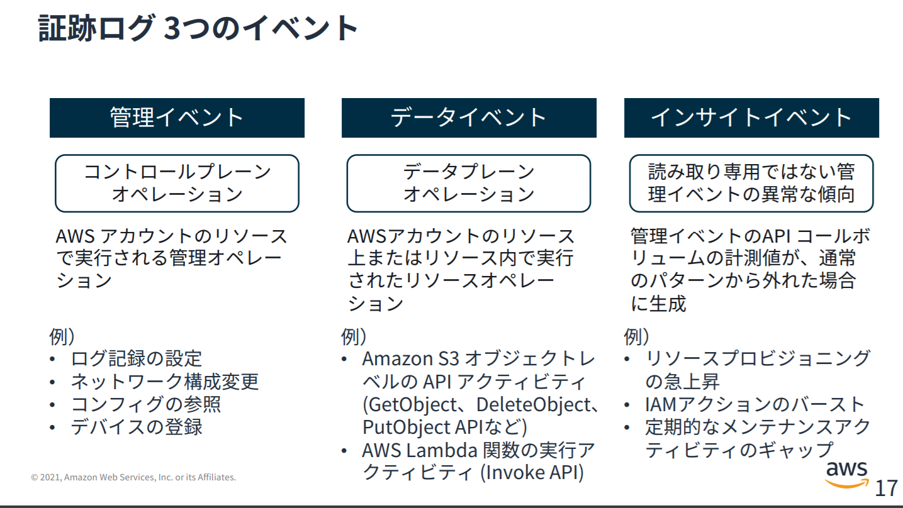

CloudTrailのデータイベントはマネージメントコンソール上からは確認出来ない
ハマったことのメモです。
データイベントとは？

ハマってしまったこと
デフォルトではデータイベントは記録されないという事実は知っていたが、データイベントがマネージメントコンソール上に出力されないという事実を知らず、時間が掛かってしまった。（CloudTrailの情報は普段Athenaで検索するが、この時はマネージメントコンソールのイベント履歴から見ようとして出て来ず、なんで？と思ってた）
マニュアルや公式のガイド的には下記の通り。
証跡での管理イベントの記録 - AWS CloudTrail
CloudTrail の [イベント履歴] 機能では、管理イベントのみサポートされています。すべての管理イベントがイベント履歴に表示されるわけではありません。
デフォルトでは、CloudTrail のデータイベントは無効になっています。追加料金をお支払いいただくことで、ログ記録を有効にできます。データイベントは、データプレーンオペレーションとも呼ばれ、しばしば大量の処理を含みます。データイベントは CloudTrail イベント履歴での表示はできません。
Athena を使用すると、Amazon S3 バケットに保存されているログファイルから、90 日を超えた CloudTrail のデータおよび管理イベントが表示できます
解決策
データイベントを見たい場合は、AthenaでCloudTrailを検索しましょう
関連しているかもしれない記事
- AthenaでCloudTrail の証跡を分析
- Redshift SpectrumからGlue Data Catalogのテーブルを参照する
- Redshift Spectrumのベストプラクティス
- EMR PySparkにspark-submitで実行
- Redshift Spectrum用にテストデータの準備、及びクエリの実行